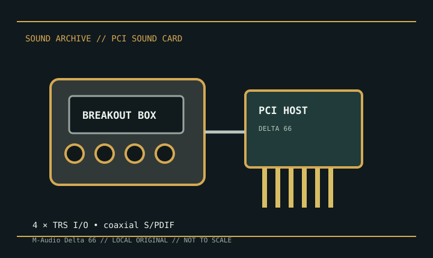

[ INDIVIDUAL MODEL // SOUND HARDWARE ]
M-Audio Delta 66
The Delta 66 is a PCI audio interface whose four analog input and four analog output connections are presented on a separate breakout box. The breakout cable and box are part of the interface path, not optional generic adapters.

Detailed specifications
| Exact model / scope | M-Audio Delta 66 PCI digital recording system. This record excludes the similarly named Delta 44 and the Delta 1010/1010LT models. |
|---|---|
| Bus / host | Conventional PCI host card connected to its dedicated external breakout box by the supplied multipin cable; confirm the host slot and cable are present. |
| Analog I/O | Four balanced/unbalanced 1/4-inch TRS analog inputs and four outputs on the breakout box. The manual documents selectable professional/consumer level settings; match them to the connected equipment. |
| Digital I/O / conversion | Coaxial S/PDIF stereo input and output on the PCI card; up to 24-bit/96 kHz operation. A software monitor mixer routes hardware and application channels. |
| MIDI / accessories | No built-in MIDI I/O on the Delta 66. Preserve the original PCI-to-breakout cable and box; without them, the analog jacks are unavailable. |
| Drivers / operating systems | The card used model-specific M-Audio Delta drivers for period Windows releases, with legacy support/documentation also associated with Macintosh systems. Current operating-system compatibility is not assured; use the archived package that matches the exact host OS. |
Compatibility & preservation
Inspect and retain the dedicated D-sub-style host-to-breakout cable, breakout enclosure, and level switches. Store the Delta driver installer and control-panel settings; test clock source and S/PDIF lock before diagnosing analog I/O.
- Photograph the model marking, PCB revision, and all included brackets or cables before service.
- Save the matching driver, manual, and working host configuration; bus fit alone does not establish driver compatibility.
- Use the manufacturer’s model-specific pinout and routing diagram before connecting line, microphone, digital, or multichannel outputs.
Sources & documentation
- M-Audio Delta 66 user manual — Full Compass archiveManual PDF with connector, cabling, level, sync, and driver setup details.
- M-Audio Delta 66 manual — ManualsLibModel-specific manual mirror for cross-checking the breakout-box wiring and operating modes.